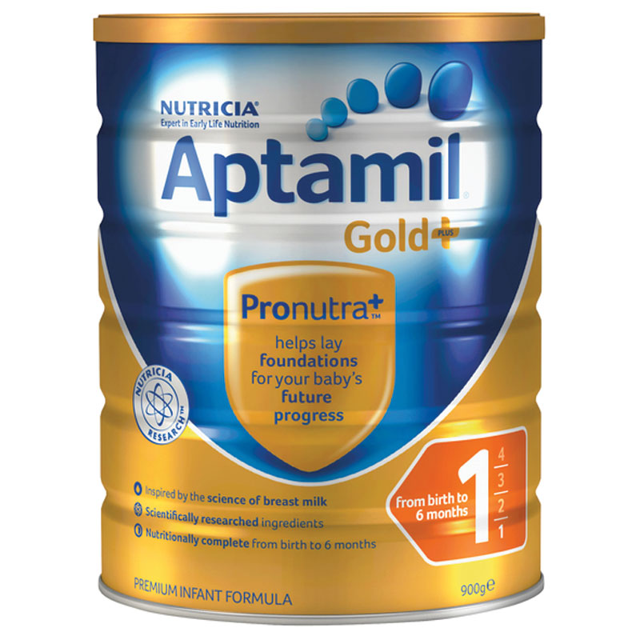
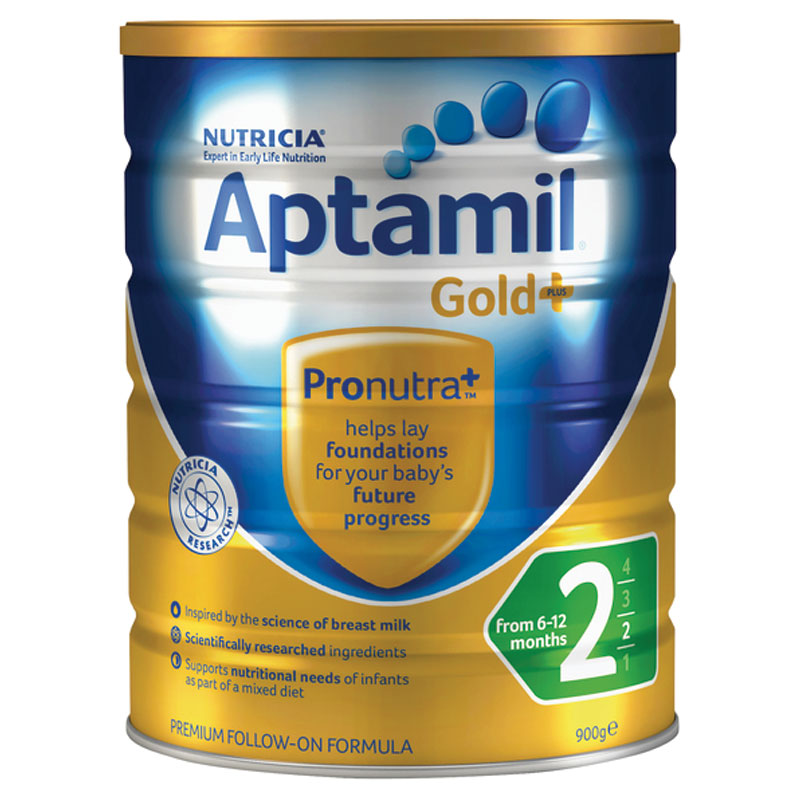

|   | 爱他美金装婴儿奶粉是营养充足的母乳替代品，1段专为从出生到6个月的宝宝研制，2段专为6个月到12个月的宝宝研制，适合不采用母乳喂养或混合喂养的宝宝。采用独特婴儿配方，满足日益增长的婴儿的营养需求，支持免疫系统的发展，促进宝宝的生长发育。
产品特点
○ 具有和母乳相同的营养成分和免疫成分。 ○ 既可以作为母乳的完全替代产品，也可以在母乳不足的时候作为辅助奶品分。 ○ 只添加天然乳糖，和母乳成分一致，不含蔗糖，易消化。 ○ 不含蔗糖，不经高温处理。 功能概述
○ 支持免疫系统的发展。 ○ 促进宝宝的生长发育。 主要成份
固体牛奶（乳清粉，乳糖，脱脂乳），植物油含有大豆油，抗氧化剂（抗坏血酸棕榈酸酯，柠檬酸）从牛奶，低聚半乳糖（GOS），干燥ω-3和ω6 LCP油（包含鱼，乳制品，大豆），长链多聚果糖，氯化胆碱，乳化剂（大豆卵磷脂），牛磺酸，肉毒碱，肌醇。维生素（A，B1，B2，B3，B5，B6，B12，C，D，E，K），叶酸，生物素。矿物质：钾，钙，氯化物，磷，钠，镁，铁，锌，铜，碘，锰，硒。核苷酸：胞苷 – 磷酸，尿苷5-单磷酸，腺苷5- 单磷酸，肌苷5 – 酸，鸟苷5- 磷酸 适用人群
○ 1段 适合0-6个月的婴幼儿。 ○ 2段 适合6-12个月的婴幼儿。 使用方法
○ 将冲泡所需的水煮沸并凉至50°C左右。 ○ 根据宝宝不同年龄，按照简易将热水量的2/3倒入奶瓶中，取出包装内量勺。 ○ 按照用量建议表量取合适的奶粉放入奶瓶中，盖好瓶盖大力摇动。 ○ 将剩余1/3的温水倒入奶瓶，将奶滴在手背处试温，温度控制在37°C。 注意事项
○ 切记不可用滚烫的开水冲制奶粉，这会破坏奶粉所含的营养成分。 ○ 冲制奶粉时避免上下摇晃奶瓶，应横向转圈摇，从而避免奶液起泡。 ○ Nutricia Aptamil的很多有益成分是在宝宝体内合成的，因此开封后可以储存较长时间，但仍然建议尽量在一个月内用完。 ○ 每次取出奶粉后都应立即封口，常温下保存，避免潮湿、高温和阳光直射。 |